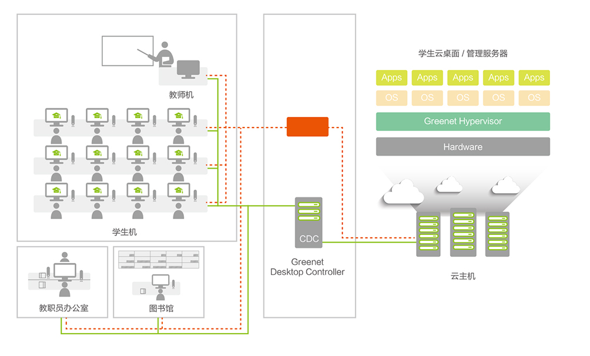

政府
医疗
教育
企业
其他行业
教育行业云解决方案
云计算和虚拟化都是国家鼓励和发展的新兴技术，通过搭建校园网的桌面云环境，可以让 学校教学业务更加灵活多样，满足学生和老师日益增长的教学科研实践需求，提升了学校的 教学管理水平和业务效率，降低运营管理成本。

全面提高信息化决策服务水平 掌握整体状况，加强动态监测，提高管理效率。 教育管理决策与服务科学化水平提升 完全释放维护管理压力 提高教师应用信息技术水平，更新教育观念，改进教学方法，提高教学效果。 和PC一样的使用、速度和自由度 学生主动学习、自主学习、创新学习，增强运用信息技术分析解决问题能力。